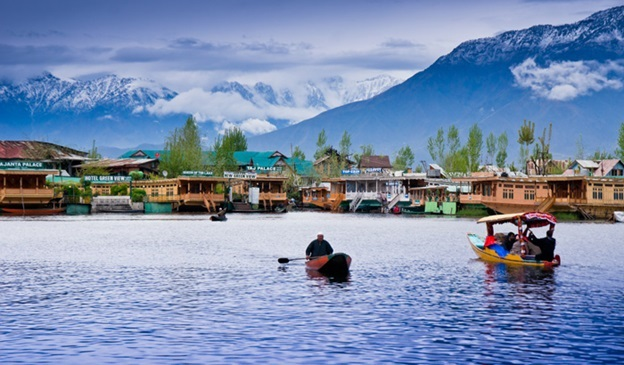
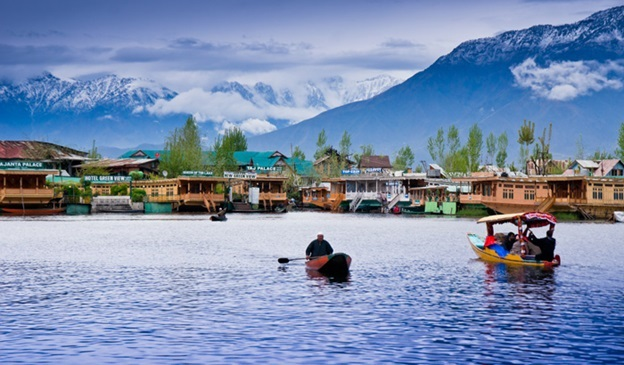

Paradise on Earth
Jammu & Kashmir, a piece of heaven on earth, is the 19th largest state in India and it is
located mostly all in the Himalayan mountains. It is also the only state in India with a
Muslim-majority population.J&K consists of three main regions – Jammu, the Kashmir
Valley and Ladakh.


 
